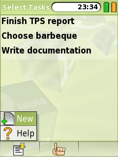

|
Home · All Namespaces · All Classes · Grouped Classes · Modules · Functions | |
The QTaskSelector class provides a way of selecting a single task from a QTaskModel. More...
#include <QTaskSelector>
Inherits QDialog.
The QTaskSelector class provides a way of selecting a single task from a QTaskModel.
In addition, the user can optionally be allowed to indicate they want to create a new task, if none of the existing tasks are suitable.
The following image shows a QTaskSelector with the option to create a new task highlighted.

See also Pim Library.
Constructs a QTaskSelector with parent parent. If allowNew is true will also provide an option to indicate a new task should be created.
Destroys a QTaskSelector
Returns true if the dialog was accepted with the option to create a new task selected. Otherwise returns false.
See also taskSelected().
Returns the task that was selected. If no task was selected returns a null task.
See also taskSelected() and newTaskSelected().
Sets the model providing the choice of tasks to model.
Returns true if the dialog was accepted with an existing task selected. Otherwise returns false.
See also newTaskSelected().
| Copyright © 2009 Trolltech | Trademarks | Qt Extended 4.4.3 |